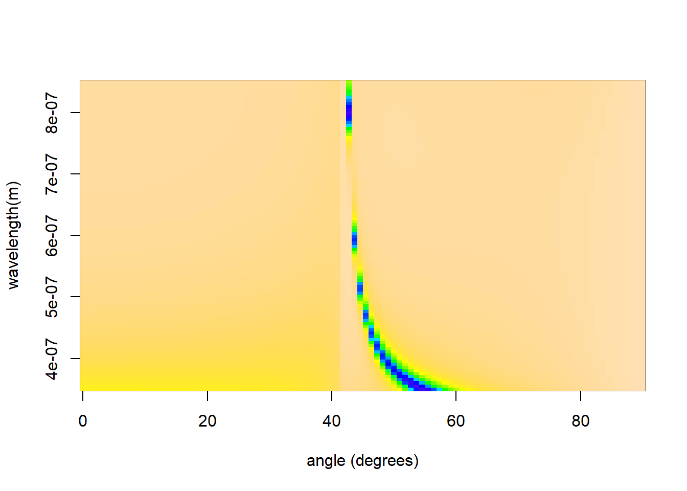
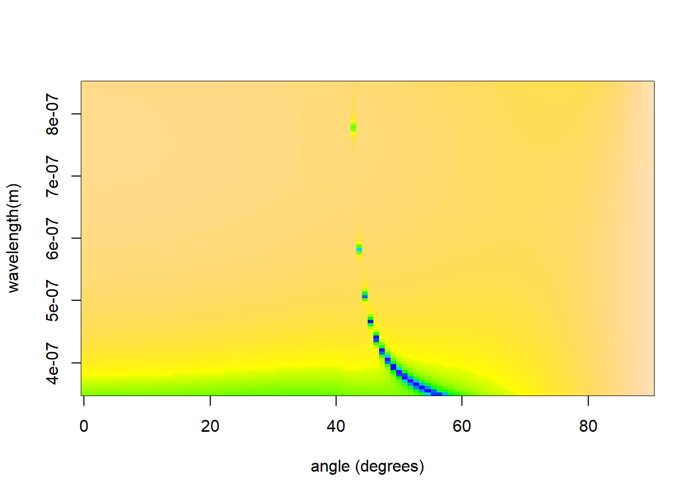

mlfilms can model dispersive materials by passing an appropriate refractive index function in the layer list object. Multiple dispersive materials can be passed as part of the layers$index vector.
As an example, this vignette shows the setup of an appropriate function, and how to pass it to the dispersion_scan function. The example shows the dispersive nature of an electromagnetic surface wave, a ’surface plasmon polariton`.
A simple approximation to Gold’s refractive index can be given by some simple second-order polynomial fits, and can be constructed into a refractive index function like so,
gold <- function(wavelength){
wavelength <- wavelength * 1e9
n <- 1.63e-1 - 4.26e-4 * wavelength + 4.06e-7 * wavelength^2
k <- -2.44 + wavelength * 1.32e-2 - 4.04e-6 * wavelength^2
return(n+k*1i)
}mlfilms will pass the wavelength to the function in meters, so the first line converts this to nanometers, then two simple polynomials return the real and imaginary component of the refractive index of gold 1.
Finally, the function returns the complex refractive index.
This is a very simple approximation to gold’s refractive index. A more complex or mature dispersion function might include a spline-fit or include warnings should the wavelength stray beyond the limits for which the fit is appropriate.
Since this function is called for each wavelength, it is advised not to include time or CPU-intensive operations within a refractive index function. For example, operations like reading in a experimental dataset of refractive index values should be placed outside of the function’s immediate environment.
mlfilms
We can then model a simple gold film using mlfilms,
library(mlfilms)
layers <- list(index = gold,
thickness = 45e-9)
result <- dispersion_scan(layers, incident_medium.index = 1.5, show.progress = F)
#> Warning in check_repetitions(layers): Number of repetitions not specified,
#> defaulting to 1.We can observe the dispersive surface plasmon in this dataset by plotting the colourmap of angle vs. wavelength. The electromagnetic surface wave presents as a minima in reflection.
image(x = unique(result$angle),
y = unique(result$wavelength),
z = matrix(result$Reflection, ncol = 100),
xlab = "angle (degrees)", ylab = "wavelength(m)", col = topo.colors(128))
It is possible to include as many dispersive functions as required in the layers specification. For Example,
layers <- list(index = c(gold, 1.1+0.1i, gold),
thickness = c(45e-9, 5e-9, 50e-9))
result <- dispersion_scan(layers, incident_medium.index = 1.5, show.progress = F)
#> Warning in check_repetitions(layers): Number of repetitions not specified,
#> defaulting to 1.
image(x = unique(result$angle),
y = unique(result$wavelength),
z = matrix(result$Reflection, ncol = 100),
xlab = "angle (degrees)", ylab = "wavelength(m)", col = topo.colors(128))
These simple fits were made from data found in the paper by Nash & Sambles (D. J. Nash and J. R. Sambles, J. Mod. Op. 43, pp81 (1996).).↩